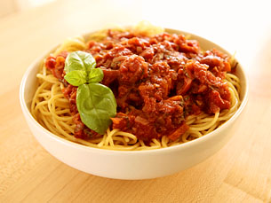

Home
Tomato Recipe

Description
The Tomato Sauce recipe is a great recipe that you can follow to get the image
above into your plate.
Ingredients
- 1 medium onion - minced
- 1 carrot - minced
- 1 clove of garlic - thinly sliced
- 2 tablespoons of fresh basil - chopped
- 4 tablespoons of olive oil
- 2 cans of diced tomatoes (14 oz cans)
- 1 tablespoon of tomato paste
- 1 teaspoon of granulated sugar
- 1/3 cup of dry red wine (or white wine) - optional
Steps
- In a medium saucepan heat the olive oil over very low heat.
-
Add the minced garlic and stir over a very low heat for about a minute.
-
Add the diced carrots, onions and fresh basil. (Or instead of the basil,
you could use thyme and oregano or marjoram or a good pinch of dried
mixed herbs)
-
Cook over a low heat, stirring frequently, for 5-7 minutes until the
vegetables have softened and are lightly colored.
-
Add the canned tomatoes, tomato paste and the sugar and give it a good
stir, then add the wine if you are using it.
-
Bring the pot to a boil, stirring regularly, and then lower the heat to
a gentle simmer.
-
Cook the sauce uncovered for about 45 minutes, stirring occasionally.
- Add some salt and pepper to taste, and enjoy!
Adapted From: Jon Sacker